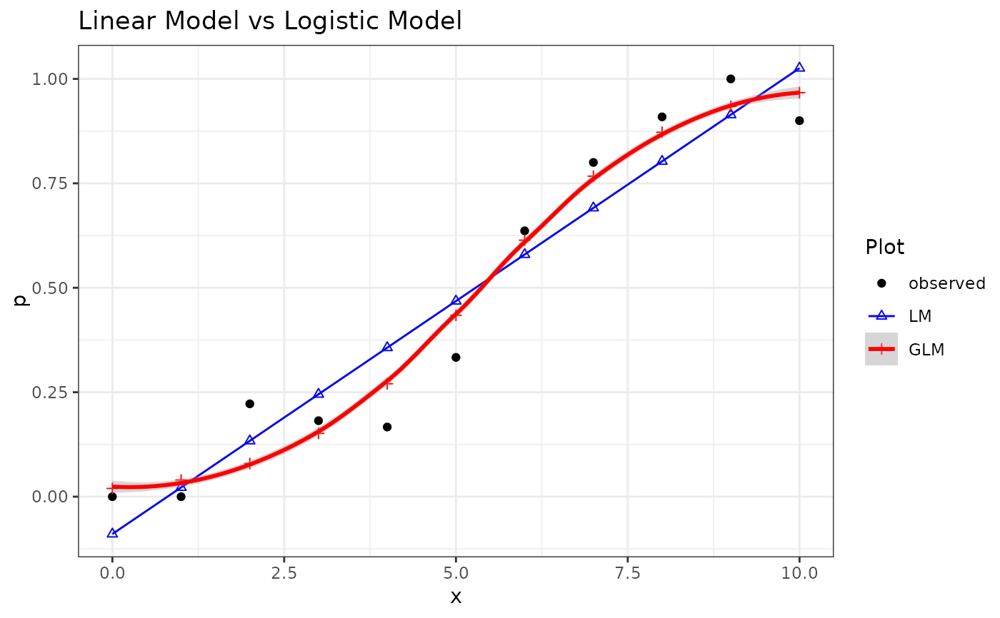
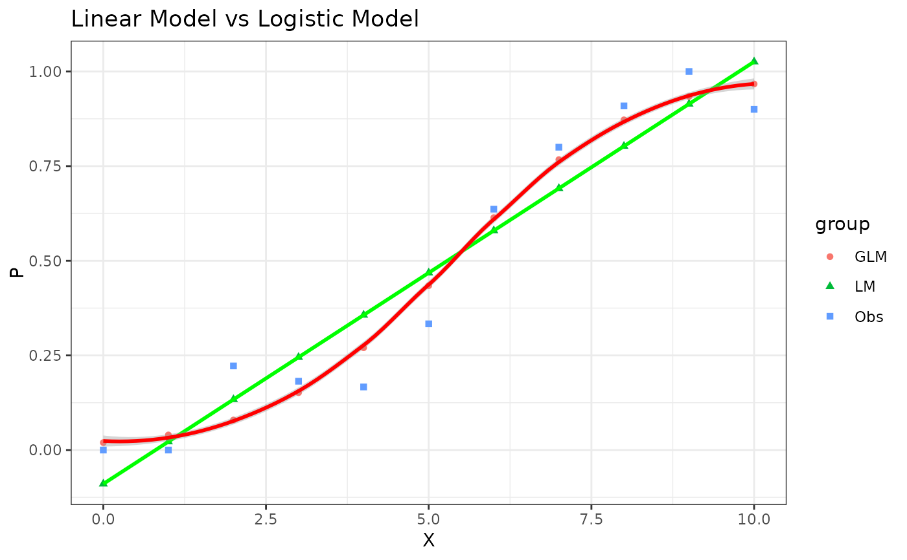

Example1.1 from Generalized Linear Mixed Models: Modern Concepts, Methods and Applications by Walter W. Stroup(p-5)
Source:R/Exam1.1.R
Exam1.1.RdExam1.1 is used for inspecting probability distribution and to define a plausible process through linear models and generalized linear models.
References
Stroup, W. W. (2012). Generalized Linear Mixed Models: Modern Concepts, Methods and Applications. CRC Press.
Author
Muhammad Yaseen (myaseen208@gmail.com)
Adeela Munawar (adeela.uaf@gmail.com)
Examples
#-------------------------------------------------------------
## Linear Model and results discussed in Article 1.2.1 after Table1.1
#-------------------------------------------------------------
data(Table1.1)
Exam1.1.lm1 <- lm(formula = y/Nx ~ x, data = Table1.1)
summary(Exam1.1.lm1 )
#>
#> Call:
#> lm(formula = y/Nx ~ x, data = Table1.1)
#>
#> Residuals:
#> Min 1Q Median 3Q Max
#> -0.18995 -0.09450 0.05671 0.08904 0.10883
#>
#> Coefficients:
#> Estimate Std. Error t value Pr(>|t|)
#> (Intercept) -0.08944 0.06625 -1.350 0.21
#> x 0.11152 0.01120 9.958 3.71e-06 ***
#> ---
#> Signif. codes: 0 ‘***’ 0.001 ‘**’ 0.01 ‘*’ 0.05 ‘.’ 0.1 ‘ ’ 1
#>
#> Residual standard error: 0.1175 on 9 degrees of freedom
#> Multiple R-squared: 0.9168, Adjusted R-squared: 0.9075
#> F-statistic: 99.16 on 1 and 9 DF, p-value: 3.706e-06
#>
library(parameters)
model_parameters(Exam1.1.lm1)
#> Parameter | Coefficient | SE | 95% CI | t(9) | p
#> -----------------------------------------------------------------
#> (Intercept) | -0.09 | 0.07 | [-0.24, 0.06] | -1.35 | 0.210
#> x | 0.11 | 0.01 | [ 0.09, 0.14] | 9.96 | < .001
#>
#> Uncertainty intervals (equal-tailed) and p-values (two-tailed) computed
#> using a Wald t-distribution approximation.
#-------------------------------------------------------------
## GLM fitting with logit link (family=binomial)
#-------------------------------------------------------------
Exam1.1.glm1 <-
glm(
formula = y/Nx ~ x
, family = binomial(link = "logit")
, data = Table1.1
)
#> Warning: non-integer #successes in a binomial glm!
## this glm() function gives warning message of non-integer success
summary(Exam1.1.glm1)
#>
#> Call:
#> glm(formula = y/Nx ~ x, family = binomial(link = "logit"), data = Table1.1)
#>
#> Coefficients:
#> Estimate Std. Error z value Pr(>|z|)
#> (Intercept) -3.9082 2.3234 -1.682 0.0925 .
#> x 0.7287 0.4057 1.796 0.0725 .
#> ---
#> Signif. codes: 0 ‘***’ 0.001 ‘**’ 0.01 ‘*’ 0.05 ‘.’ 0.1 ‘ ’ 1
#>
#> (Dispersion parameter for binomial family taken to be 1)
#>
#> Null deviance: 7.45149 on 10 degrees of freedom
#> Residual deviance: 0.67672 on 9 degrees of freedom
#> AIC: 8.3671
#>
#> Number of Fisher Scoring iterations: 5
#>
model_parameters(Exam1.1.glm1)
#> Parameter | Log-Odds | SE | 95% CI | z | p
#> ---------------------------------------------------------------
#> (Intercept) | -3.91 | 2.32 | [-10.64, -0.54] | -1.68 | 0.093
#> x | 0.73 | 0.41 | [ 0.14, 1.92] | 1.80 | 0.072
#>
#> Uncertainty intervals (profile-likelihood) and p-values (two-tailed)
#> computed using a Wald z-distribution approximation.
#>
#> The model has a log- or logit-link. Consider using `exponentiate =
#> TRUE` to interpret coefficients as ratios.
#-------------------------------------------------------------
## GLM fitting with logit link (family = Quasibinomial)
#-------------------------------------------------------------
Exam1.1.glm2 <-
glm(
formula = y/Nx~x
, family = quasibinomial(link = "logit")
, data = Table1.1
)
## problem of "warning message of non-integer success" is overome by using quasibinomial family
summary(Exam1.1.glm2)
#>
#> Call:
#> glm(formula = y/Nx ~ x, family = quasibinomial(link = "logit"),
#> data = Table1.1)
#>
#> Coefficients:
#> Estimate Std. Error t value Pr(>|t|)
#> (Intercept) -3.9082 0.6366 -6.139 0.000171 ***
#> x 0.7287 0.1112 6.555 0.000105 ***
#> ---
#> Signif. codes: 0 ‘***’ 0.001 ‘**’ 0.01 ‘*’ 0.05 ‘.’ 0.1 ‘ ’ 1
#>
#> (Dispersion parameter for quasibinomial family taken to be 0.07508072)
#>
#> Null deviance: 7.45149 on 10 degrees of freedom
#> Residual deviance: 0.67672 on 9 degrees of freedom
#> AIC: NA
#>
#> Number of Fisher Scoring iterations: 5
#>
model_parameters(Exam1.1.glm2)
#> Parameter | Log-Odds | SE | 95% CI | t(9) | p
#> ---------------------------------------------------------------
#> (Intercept) | -3.91 | 0.64 | [-5.29, -2.77] | -6.14 | < .001
#> x | 0.73 | 0.11 | [ 0.53, 0.97] | 6.55 | < .001
#>
#> Uncertainty intervals (profile-likelihood) and p-values (two-tailed)
#> computed using a Wald t-distribution approximation.
#-------------------------------------------------------------
## GLM fitting with survey package(produces same result as using quasi binomial family in glm)
#-------------------------------------------------------------
library(survey)
#> Loading required package: grid
#> Loading required package: Matrix
#> Loading required package: survival
#>
#> Attaching package: ‘survey’
#> The following object is masked from ‘package:graphics’:
#>
#> dotchart
design <- svydesign(ids = ~1, data = Table1.1)
#> Warning: No weights or probabilities supplied, assuming equal probability
Exam1.1.svyglm <-
svyglm(
formula = y/Nx~x
, design = design
, family = quasibinomial(link = "logit")
)
summary(Exam1.1.svyglm)
#>
#> Call:
#> svyglm(formula = y/Nx ~ x, design = design, family = quasibinomial(link = "logit"))
#>
#> Survey design:
#> svydesign(ids = ~1, data = Table1.1)
#>
#> Coefficients:
#> Estimate Std. Error t value Pr(>|t|)
#> (Intercept) -3.9082 0.7060 -5.535 0.000363 ***
#> x 0.7287 0.1171 6.225 0.000154 ***
#> ---
#> Signif. codes: 0 ‘***’ 0.001 ‘**’ 0.01 ‘*’ 0.05 ‘.’ 0.1 ‘ ’ 1
#>
#> (Dispersion parameter for quasibinomial family taken to be 0.06754992)
#>
#> Number of Fisher Scoring iterations: 5
#>
model_parameters(Exam1.1.svyglm)
#> Parameter | Log-Odds | SE | 95% CI | t(9) | p
#> ---------------------------------------------------------------
#> (Intercept) | -3.91 | 0.71 | [-5.51, -2.31] | -5.54 | < .001
#> x | 0.73 | 0.12 | [ 0.46, 0.99] | 6.23 | < .001
#>
#> Uncertainty intervals (equal-tailed) and p-values (two-tailed) computed
#> using a Wald t-distribution approximation.
#-------------------------------------------------------------
## Figure 1.1
#-------------------------------------------------------------
Newdata <-
data.frame(
Table1.1
, LM = Exam1.1.lm1$fitted.values
, GLM = Exam1.1.glm1$fitted.values
, QB = Exam1.1.glm2$fitted.values
, SM = Exam1.1.svyglm$fitted.values
)
#-------------------------------------------------------------
## One Method to plot Figure1.1
#-------------------------------------------------------------
library(ggplot2)
Figure1.1 <-
ggplot(
data = Newdata
, mapping = aes(x = x, y = y/Nx)
) +
geom_point (
mapping = aes(colour = "black")
) +
geom_point (
data = Newdata
, mapping = aes(x = x, y = LM, colour = "blue"), shape = 2
) +
geom_line(
data = Newdata
, mapping = aes(x = x, y = LM, colour = "blue")
) +
geom_point (
data = Newdata
, mapping = aes(x = x, y = GLM, colour ="red"), shape = 3
) +
geom_smooth (
data = Newdata
, mapping = aes(x = x, y = GLM, colour = "red")
, stat = "smooth"
) +
theme_bw() +
scale_colour_manual (
values = c("black", "blue", "red"),
labels = c("observed", "LM", "GLM")
) +
guides (
colour = guide_legend(title = "Plot")
) +
labs (
title = "Linear Model vs Logistic Model"
) +
labs (
y = "p"
)
print(Figure1.1)
#> `geom_smooth()` using method = 'loess' and formula = 'y ~ x'

#-------------------------------------------------------------
## Another way to plot Figure 1.1
#-------------------------------------------------------------
newdata <-
data.frame(
P = c(
Table1.1$y/Table1.1$Nx
, Exam1.1.lm1$fitted.values
, Exam1.1.glm1$fitted.values
)
, X = rep(Table1.1$x, 3)
, group = rep(c('Obs','LM','GLM'), each = length(Table1.1$x))
)
Figure1.1 <-
ggplot(
data = newdata
, mapping = aes(x = X , y = P)
) +
geom_point(
mapping = aes(x = X , y = P, colour = group , shape=group)
) +
geom_smooth(
data = subset(x = newdata, group == "LM")
, mapping = aes(x=X,y=P)
, col = "green"
) +
geom_smooth(
data = subset(x = newdata, group=="GLM")
, mapping = aes(x = X , y = P)
, col = "red"
) +
theme_bw() +
labs(
title = "Linear Model vs Logistic Model"
)
print(Figure1.1)
#> `geom_smooth()` using method = 'loess' and formula = 'y ~ x'
#> `geom_smooth()` using method = 'loess' and formula = 'y ~ x'

#-------------------------------------------------------------
## Correlation among p and fitted values using Gaussian link
#-------------------------------------------------------------
(lmCor <- cor(Table1.1$y/Table1.1$Nx, Exam1.1.lm1$fitted.values))
#> [1] 0.9574927
#-------------------------------------------------------------
## Correlation among p and fitted values using quasi binomial link
#-------------------------------------------------------------
(glmCor <- cor(Table1.1$y/Table1.1$Nx, Exam1.1.glm1$fitted.values))
#> [1] 0.9810858